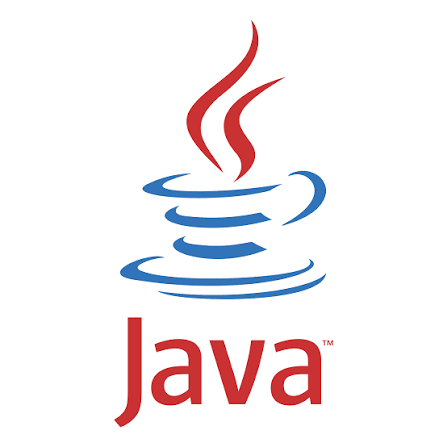
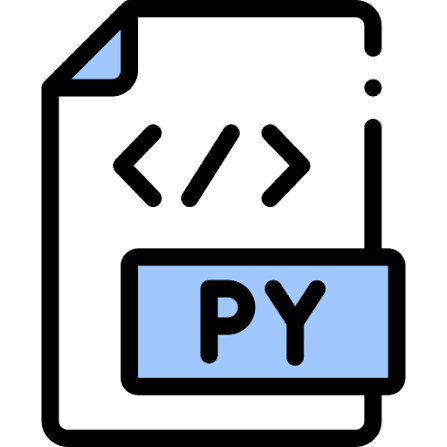
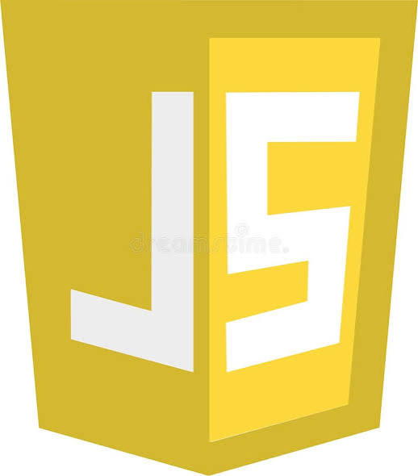
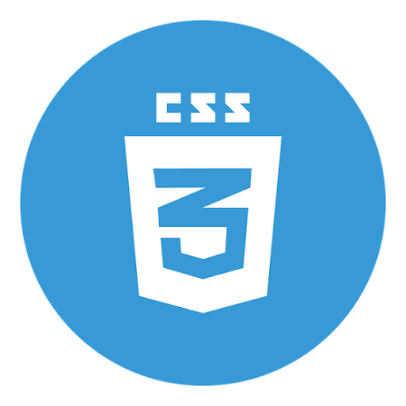
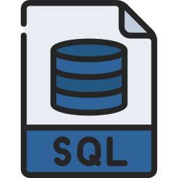

About.
Developer mindset, Information Systems foundation, and an interest in building useful tools across multiple programming environments.
[ About me ]
I’m Tegar Maulana, an Information Systems student at Mercu Buana University, Meruya, who enjoys building software that is practical, clear and actually usable.
I work across several programming languages and project types, especially Lua, Java, Python, HTML, CSS and JavaScript. My work ranges from academic web and OOP projects to independent automation ideas such as a Discord-based store system.
I also use Lua for scripting experiments focused on automation, event-driven logic, state handling and reusable workflows.
Education & direction
Current
Information Systems — Mercu Buana University
Meruya campus. Building a foundation in information systems, programming, software development and technology implementation.
2026
Public GitHub Projects
Published repositories covering website development, Java object-oriented coursework and a generative AI project.
Independent
Automation & Lua Experiments
Developing Discord store concepts and Lua scripting experiments focused on automation logic, reusable program flow and efficient workflows.
Toolbox.
Technologies I currently use, learn, or apply in projects.




